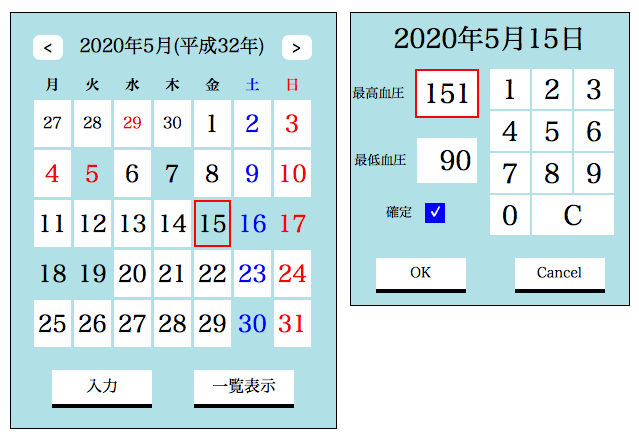
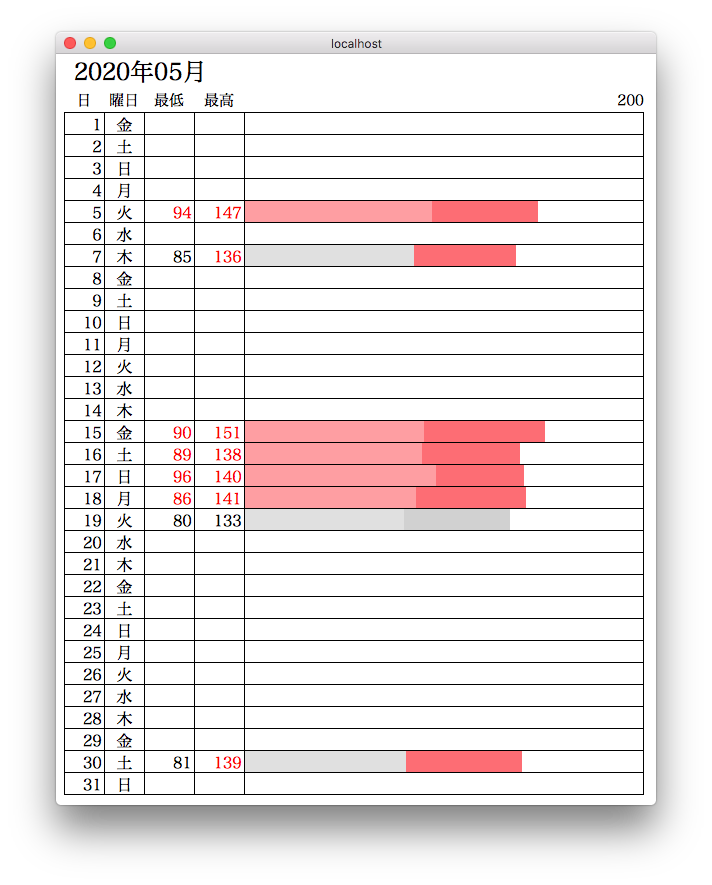
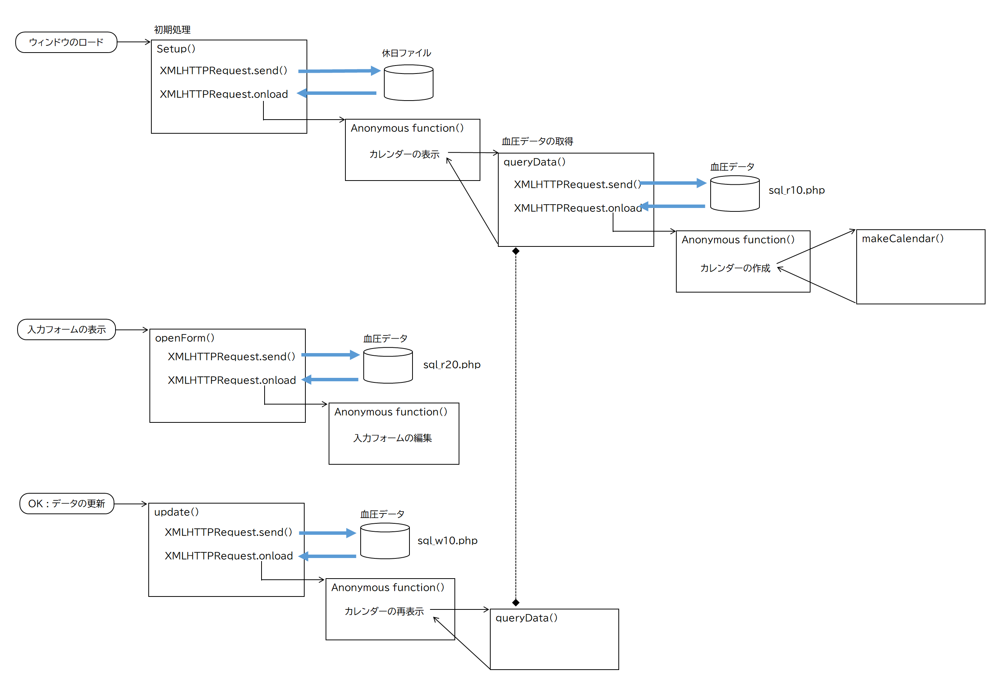

血圧管理カレンダー（JavaScript版）
機能
（Objectice-C版アプリケーションと同じ）
日付を選択し、入力ボタンをクリックすると、その日の血圧値を入力する入力フォームが表示される。値を入力しOKボタンをクリックするとデータベースに登録される。血圧データが入力済みの日は、背景色をブルーに変える。

画像をクリックすると実際の動きが確認できます。ただし表示専用なのでデータの更新はできません。
一覧表示ボタンをクリックすると当月のデータの一覧表が表示される。

実装方法
HTTP送受信によりサーバとデータのやりとりを行う。サーバのデータベースから血圧データを取得しカレンダを作成したり一覧表を作成する。また、入力フォームから入力された血圧データをデータベースに更新する。
リクエスト処理
サーバサイドの処理
データベースからデータを取得し、クライアントにレスポンスを返す。
入力フォームで血圧を入力する処理はやや込み入っているが、大部分 clickイベントとkeydownイベントのハンドラの実装となっている。
UIを実現する基本的な仕組みは、UIベースのアプリケーション（SwiftやC#など）と大体同じようなものである。
血圧入力フォームの表示/非表示はdisplay属性の設定により切り替えている。フォームがモーダルなウィンドウに見えるのは、フォームを表示したときにカレンダ本体のイベントハンドラを無効にしているからでsる。
一覧表の作成は、表の各行を動的に作成し、HTMLドキュメントに追加していく。表は、CSS の Gridレイアウトとし、各要素（日、曜日、最低血圧、最高血圧、棒グラフ）を２次元の配列に配置していく。
HTML定義の一覧表の先頭部分：この下に要素を追加していく。
CSS定義
一覧表の Grid は、要素の配置が１行あたり５列の２次元列配列とする。
血圧データを要素オブジェクトに変換し、開始位置の div要素（class='chart'）の下に子ノードとして追加していく。（見出しの div要素の次に追加してはいけない。そうすると、追加した要素が見出し要素の子ノードになってしまう。）
棒グラフは、１行が [最低血圧][最高血圧][余白] の３要素からなるGridとして定義する。それぞれの長さを算出しGridの列定義に設定することで値に応じた長さを表現することができる。
ソースコード
HTML healthCalendar.html
JajvaScript
カレンダー本体 healthCalendar1.js
血圧データ入力 healthCalendar2.js
一覧表作成 result.js
CSS
カレンダー＆血圧データ入力 styles2.css
一覧表作成 styles4.css
サーバーサイド・PHP
血圧データ照会：期間指定 sql_r10.php
血圧データ照会：日付指定 sql_r20.php
血圧データ更新 sql_w10.php
データベース定義 MYDB.php
初期処理共通 init.php
関数の関連図
備忘録
関数に関数を渡すテクニックは便利。遅延更新や非同期で起動した処理のコールバック処理を記述したりする。（Objective-Cのデリゲートに相当する技法）
Swift/Objctive-Cの「for in」 に相当するのは「for of」
HTMLには基本的に矩形の大きさ定義するとう発想はない。表示するコンテンツの大きさにより、それを入れる矩形は伸縮する。矩形の中のコンテンツをpaddingで調整することで矩形の大きさを変えることができる。垂直方向が悩ましい。
キャンバスに図形を描画することも試してみた。widthとheightの単位が曲者。キャンバスはデフォルの大きさが150px四方の矩形になっていて、その場合には単位はピクセルとなる。キャンバスのサイズを変更すると、それに比例して単位も変わる。キャンバスを300px四方の矩形（各座標で2倍）にしたら、描画する図形のwidth, heightも2倍にしなければいけない。